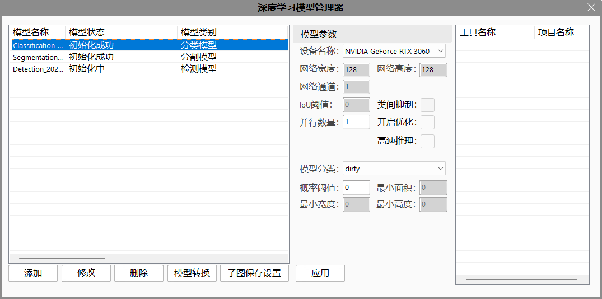
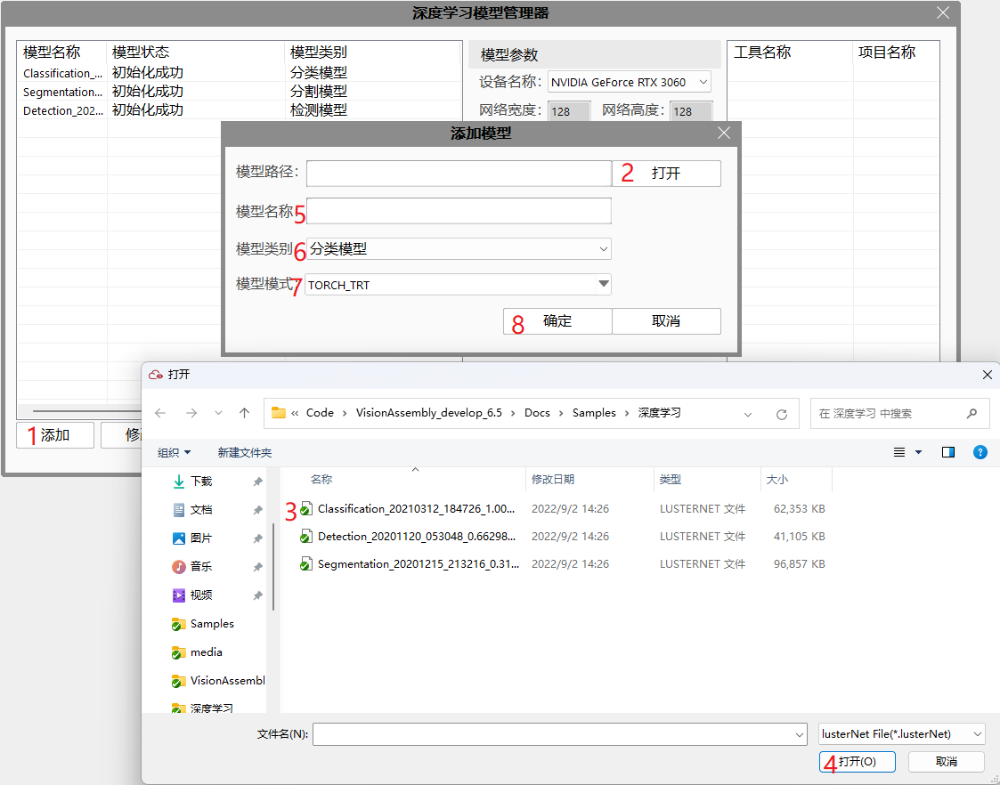
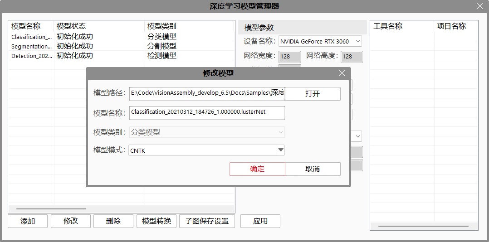
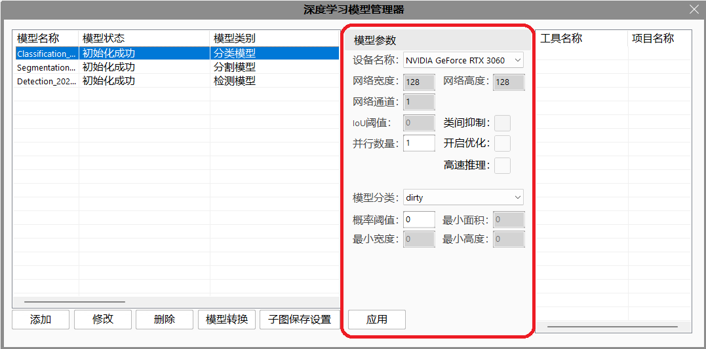
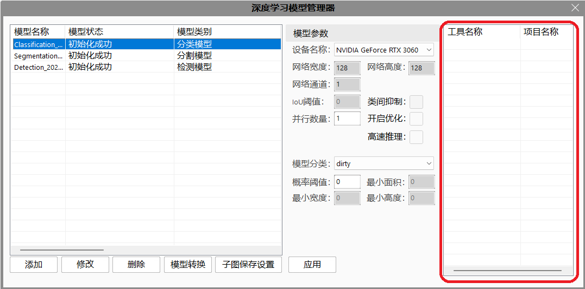
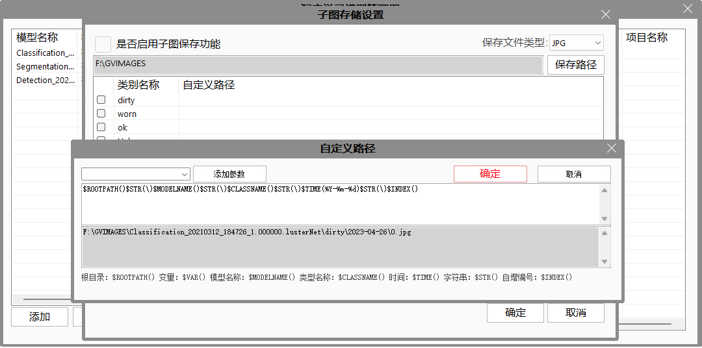
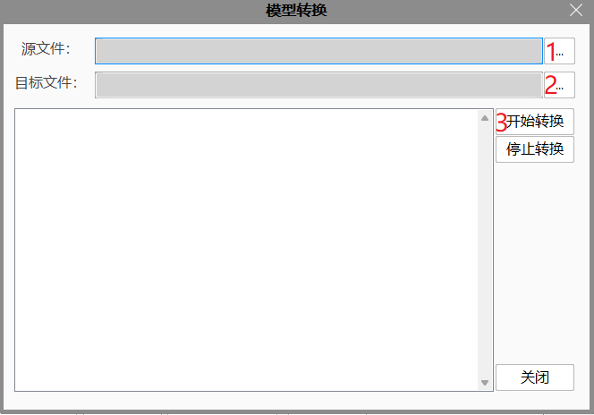

模型管理器的主要作用是帮助用户集中管理深度学习工具所使用的模型。 该模型管理器可以在解决方案中添加模型对象，修改模型对象的参数信息，查看模型被哪些工具引用，保存模型评估的图像。

点击添加按钮加模型对象，如图所示。添加时请确认模型类型选择无误，模型类型不可修改，如果模型类别选择错误则必须删除模型重新添加。

可以选择某个模型对模型的名称和使用模型文件进行修改，如图所示。可以修改模型的名称和模型文件，但是不可以修改模型类型。

可以选择某个模型进行删除操作，如图所示。如工具仅引用此模型，删除会使引用模型的工具无法正常工作，请谨慎操作。
可以查看并修改模型参数，如图所示。根据模型类型不同可以修改的参数会有对应变化。

可以查看哪些工具引用了被选模型，如图所示。

可以设置模型运行时是否保存模型收到的子图，如图所示。可以选择子图保存的目录和文件类型，子图文件名称为时间戳，暂不支持自定义子图名称。子图保存机制以模型为单位，即如果有多个工具引用同一个模型，则多个工具的子图会按照模型设置保存在同一个目录中。

双击某行子图设置可以呼出自定义路径窗口，自定义路径窗口可以通过宏命令自定义保存路径。 宏描述如下： | 宏名称 | 宏意义 | | —————– | ————————————————- | | $ROOTPATH() | 子图存储设置的保存路径 | | $VAR() | 引用程序变量，可以使用任意局部变量或全局变量 | | $MODELNAME() | 计算子图使用的模型名称 | | $CLASSNAME() | 子图结果的类型名称模型名称 | | $TIME | 时间，使用C++标准格式化方式对括号内信息进行格式化，如今天为2000年1月1日$TIME(%Y-%m-%d)格式化结果为200-01-01| | $STR() | 字符串，直接使用括号内的字符串 | | $INDEX() | 自增编号，从0开始逐次递增 |
| 时间格式化宏 | 宏意义 |
|---|---|
| %a | 星期简写 |
| %A | 星期全称 |
| %b | 月份简写 |
| %B | 月份全称 |
| %c | 标准日期时间串 |
| %d | 日 |
| %H | 时，24时制 |
| %I | 时，12时制 |
| %j | 每年的第几天 |
| %m | 月 |
| %M | 分 |
| %S | 秒 |
| %w | 星期数字表示，从星期天开始0-6 |
| %W | 第几周 0-53 |
| %y | 不带世纪的年 |
| %Y | 带世纪的年 |
| %% | 百分号 |
可以将lusterpth模型转换为lustertrt格式，如图所示。

| 现象描述 | 解决方法 |
|---|---|
| 初始化失败，故障码为1 | 评估器初始化报输入错误，检查模型参数是否正确 |
| 初始化失败，故障码为2 | 评估器初始化报初始化错误，检查模型文件是否有效 |
| 初始化失败，故障码为3 | 评估器初始化报显存错误，请使用较小的模型文件或升级显卡 |
| 初始化失败，故障码为4 | 评估器初始化报内部错误，内部运算错误，检查显卡驱动是否正常 |
| 参数名称 | 参数说明 |
|---|---|
| 设备名称 | GPU型号，多个GPU时可以指定使用哪个GPU |
| 网络宽度 | 模型所处理图像的宽度 |
| 网络高度 | 模型所处理图像的高度 |
| 网络通道 | 模型所处理图像的通道 |
| IOU阈值 | 检测出的目标的IOU参数，输入过滤结果的参数 |
| 类间抑制 | 检测出的目标的类间抑制参数，属于过滤结果的参数 |
| 并行数量 | 模型并行启用评估器的数量，多个并行深度学习工具引用同一个模型时，提高并行数量有助于提升任务处理效率，但会耗费显存 |
| 开启优化 | 是否开启加速。选择“是”，会加快分割速度。 |
| 高速推理 | 是否开启高速推理功能。选择“是”，启用高速推理功能。 |
| 类别名称 | 模型中所有类别的名称 |
| 概率阈值 | 当前类别名称的分类结果的最低可信度（可设置每个类别的阈值），如果每个类别的可信度都低于其对应阈值，分类结果为UnKnown |
| 最小面积 | 检测出的目标的最小面积，属于过滤结果的参数 |
| 最小宽度 | 检测出的目标的最小宽度，属于过滤结果的参数 |
| 最小高度 | 检测出的目标的最小高度，属于过滤结果的参数 |